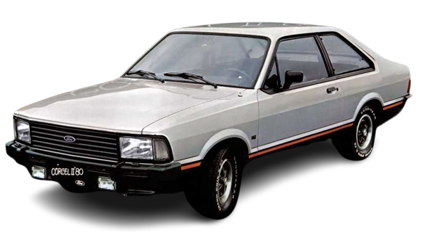

CORCEL II GT
Um ícone de elegância e modernidade, o Corcel II foi o carro familiar com alma de campeão, que conquistou o Brasil com seu estilo marcante e a promessa de um futuro sobre rodas.

HISTÓRIA
No final de 1977 chegava às ruas o novo modelo: o Corcel II. A carroceria era totalmente nova, com linhas mais retas, modernas e bonitas. Os faróis e as lanternas traseiras, seguindo uma tendência da época, eram retangulares e envolventes.
A grade possuía desenho aerodinâmico das lâminas, em que a entrada de ar era mais intensa em baixas velocidades que em altas.
Já em 1980 a Ford lançou como opcional para o Corcel II o motor de 1.6 (1555 cm³) com câmbio de 4 marchas, mas com relações mais longas e 90 cv de potência. O Corcel II passou a andar um pouco mais rápido, fazia de 0 a 100 km/h em medianos 17 segundos e a velocidade máxima passava a ser de 148 km/h, o suficiente para andar junto do seu concorrente mais próximo, o Passat 1500, porém muito atrás da versão 1600 (1.6).
a GT, que se distinguia pelo volante esportivo de três raios, aro acolchoado em preto e pequeno conta-giros no painel.
FICHA TECNICA
Modelo: Corcel II GT
Ano: 1978–1984
Motor: 1.6 gasolina
Potência: 90 cv
Torque: 12,8 kgfm
0–100 km/h: ≈14 s
Vel. Máx: ≈160 km/h
Peso: 975 kg
Tração: Dianteira
Câmbio: Manual 5 marchas
Dimensões (C×L×A): 4.350×1.660×1.360 mm
CURIOSIDADE
Uma curiosidade interessante sobre o Ford Corcel II é a sua impressionante eficiência aerodinâmica para a época. Lançado em 1977, o Corcel II apresentava um design que, embora mais quadrado que o Corcel I, foi cuidadosamente pensado para otimizar o fluxo de ar. Ele foi um dos primeiros carros nacionais a ter um foco tão grande na aerodinâmica, resultando em um coeficiente de arrasto (Cx) muito baixo para os padrões da década de 70.
GALERIA
Imagens do Corcel II GT
Canal: Renato Bellote